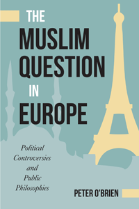

<body bgcolor="#FFFFFF" text="#000000" link="#0000FF" vlink="#CC0000" alink="#CC0000"><center><hr width="350" size="1" align="center" noshade>Arguing that controversy around the politics of Islam in Europe is best understood as a contest of intra-European political philosophies<hr width="350" size="1" align="center" noshade><p><a href="https://cdcshoppingcart.uchicago.edu/Cart/ChicagoBook.aspx?ISBN=&&PRESS=temple" target="_top">Buy this book!</a> | <a href="https://cdcshoppingcart.uchicago.edu/Cart/Cart.aspx?PRESS=temple" target="_top">View Cart</a> | <a href="https://cdcshoppingcart.uchicago.edu/Cart/Cart.aspx?PRESS=temple" target="_top">Check Out</a></p><p></p></center><!--none//--><h1 class = "booktitle">The Muslim Question in Europe</h1> <h1 class = "subtitle">Political Controversies and Public Philosophies</h1>
<h3>Peter O'Brien</h3>
paper: $32.95, Jan 16<BR>EAN:&nbsp;978-1-4399-1277-5<BR><font color=#990033>Available</FONT><font size=-7><br>&nbsp;</font></p><p class="info">cloth: $94.50, Jan 16<BR>EAN:&nbsp;978-1-4399-1276-8<BR><font color=#990033>Available</FONT><font size=-7><br>&nbsp;</font></p><p class="info">e-book: $32.95, Jan 16<BR>EAN:&nbsp;978-1-4399-1278-2<BR><font color=#990033>Available</FONT><font size=-7><br>&nbsp;</font></p></p></td></tr></table>
<BR> <p class="info">318 pp<BR> 6 x 9<BR> <p class="info"><font size=-7>&nbsp;</font></p><p class="info">
</P><BLOCKQUOTE><p>
"<i>Peter&nbsp;O'Brien discusses&nbsp;the huge amount of research on the major controversies surrounding Islam and Muslims in Europe when it comes to secularism, women's rights, citizenship, and terrorism. He shows how and why these controversies reveal the inherent contradictions and dilemmas of European identities as much as they shed light on the so called ‘exceptionalism' of Islam. </i>The Muslim Question in Europe<i> will be very&nbsp;relevant&nbsp;to students and scholars of religion, comparative politics, and immigration.</i>"- <b>Jocelyne Cesari</b>,&nbsp;Professor of Religion and Politics, University of Birmingham; Director of the Islam in the West Program at Harvard University; and author of <i>The Awakening of Muslim Democracy</i>
<br></BLOCKQUOTE>
<p>
An estimated twenty million Muslims now reside in Europe, mostly as a result of large-scale postwar immigration. In <i>The Muslim Question in Europe, </i>Peter O'Brien challenges the popular notion that the hostilities concerning immigration-which continues to provoke debates about citizenship, headscarves, secularism, and terrorism-are a clash between "Islam and the West." Rather, he explains, the vehement controversies surrounding European Muslims are better understood as persistent, unresolved <i>intra-European</i> tensions.<br>
<p>O'Brien contends that the best way to understand the politics of state accommodation of European Muslims is through the lens of three competing political ideologies: liberalism, nationalism, and postmodernism. These three broadly understood philosophical traditions represent the most influential normative forces in the politics of immigration in Europe today. He concludes that Muslim Europeans do not represent a monolithic anti-Western bloc within Europe. Although they vehemently disagree among themselves, it is along the same basic liberal, nationalist, and postmodern contours as non-Muslim Europeans.
<br>
<P CLASS="top"><A HREF="#top">BACK TO TOP</A></P>&nbsp;<h2 class="inpageheading"><A NAME="excerpt"></a>Excerpt</h2><p>
Read an excerpt from the Introduction (pdf).
<br>
<P CLASS="top"><A HREF="#top">BACK TO TOP</A></P>
<BR>&nbsp;
<h2 class="inpageheading"><A NAME="reviews"></a>Reviews</h2>
<p>
"<i>Reflecting a stunningly broad range of erudition resulting from decades of research</i>, The Muslim Question in Europe <i>provides an antidote for those grappling to understand the myriad migration-related challenges faced by Europeans. O'Brien contends that the complexities are best explicated by viewing the issues through a Kulturkampf lens pitting liberal, nationalist, and post-modernist insights against or complementary to one another. Of special interest is the timely chapter on terrorism and security. Here, too, he discerns a pattern of normative Kulturkampf and policy messiness. He views this outcome as very European. Islam, after all, is of Europe too.</i>"-<b>Mark J. Miller, </b>University of Delaware and co-author&nbsp;of <i>The Age of Migration</i>
<br>
<p>
"<i>A thought-provoking and fresh look at the history of ideas that have shaped Europeans' encounter with the historic settlement of Muslim minorities in Western Europe. O'Brien is an able guide to the best research in philosophy and the social sciences as he explores the nuances of western cultural contexts. </i>The Muslim Question in Europe <i>combines rich normative and empirical analyses that shed light on unresolved conflicts in European nation-states.</i>"-<b>Jonathan Laurence,</b> Associate Professor of Political Science at Boston College and author of&nbsp;<i>The Emancipation of Europe's Muslims</i>&nbsp;and&nbsp;<i>Integrating Islam</i>
<br>
<p>
<i>"[A] remarkable book.... Without taking a stand himself (and denying any claims to absolute certainty), the author focuses, in turn, on citizenship, the headscarf controversy, secularism, and domestic security/terrorism."-</i><b><i>The Muslim World Book Review</i></b>
<br>
<P CLASS="top"><A HREF="#top">BACK TO TOP</A></P>&nbsp;<P>
</P><BR>&nbsp;
<H2 class="inpageheading"><A NAME="author bio"></a>About the Author(s)</H2><p>
<b>Peter O'Brien </b>is Professor of Political Science at Trinity University in San Antonio, Texas. He is the author of <i>European Perceptions of Islam and America from Saladin to George W. Bush: Europe's Fragile Ego Uncovered</i>, and <i>Beyond the Swastika</i>. He has been a Social Science Research Council Fellow at the Free University in Berlin, and Fulbright Visiting Professor at Bo&#287;aziçi University in Istanbul and at the Humboldt University in Berlin.
<br>
<P CLASS="top"><A HREF="#top">BACK TO TOP</A></P>
<p><h2 class="inpageheading"><A NAME="subjects"></a>Subject Categories</h2><P><A HREF="/tempress/philosophy.html" TARGET="_top">Philosophy and Ethics</a><BR><P><A HREF="/tempress/political.html" TARGET="_top">Political Science and Public Policy</a><BR><P><A HREF="/tempress/religion.html" TARGET="_top">Religion</a></P></P>
</p>
<P>
</P>
<p align="center"><a href="https://cdcshoppingcart.uchicago.edu/Cart/ChicagoBook.aspx?ISBN=&&PRESS=temple" target="_top">Buy this book!</a> | <a href="https://cdcshoppingcart.uchicago.edu/Cart/Cart.aspx?PRESS=temple" target="_top">View Cart</a> | <a href="https://cdcshoppingcart.uchicago.edu/Cart/Cart.aspx?PRESS=temple" target="_top">Check Out</a></p><p><font face="Arial" size="1"><a href="copyright.html" onMouseOver="window.status='Web Copyright Policy';return true;" onMouseOut="window.status=''" title="Web Copyright Policy">&copy;</a> 2016 <a href="http://www.temple.edu" target="new" onMouseOver="window.status='Link to Temple University home page';return true;" onMouseOut="window.status=''" title="Link to Temple University home page">Temple University</a>. All Rights Reserved. http://www.temple.edu/tempress/titles/2373_reg.html</font></p>